CSAS
건물 결함 분류 및 탐색 서비스
Table of Contents
01. 개요
AI 기반 건축물·시설물 균열 분석 및 관리 서비스
사용자가 촬영한 결함 이미지를 AI가 분석하여 손상 여부와 위치를 탐지하고 분석 결과를 저장·관리합니다.
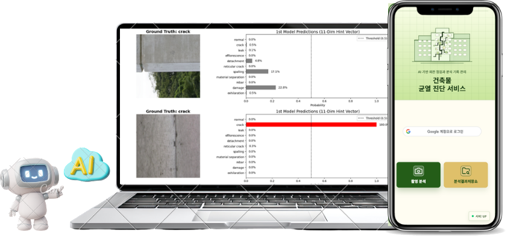
✓ 균열 이미지를 AI 분석
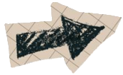
02. 기존 문제점 (1)
첫째, 점검자의 경험에 따라 판단이 달라질 수 있습니다.
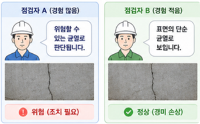
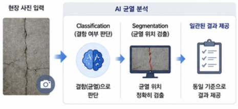
02. 기존 문제점 (2)
둘째, 현장 기록이 체계적이지 않습니다.
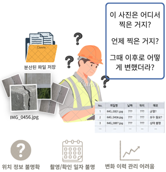
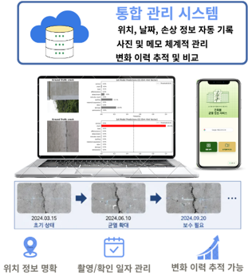
02. 기존 문제점 (3)
셋째, 전문 인력이 항상 현장에 있을 수 없습니다.
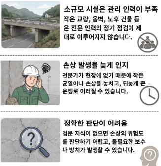
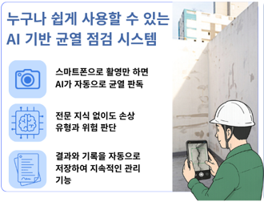
02. 기존 문제점-해결방안
AI 기반 이미지 분석과 사진 관리 기능으로 문제를 해결합니다.
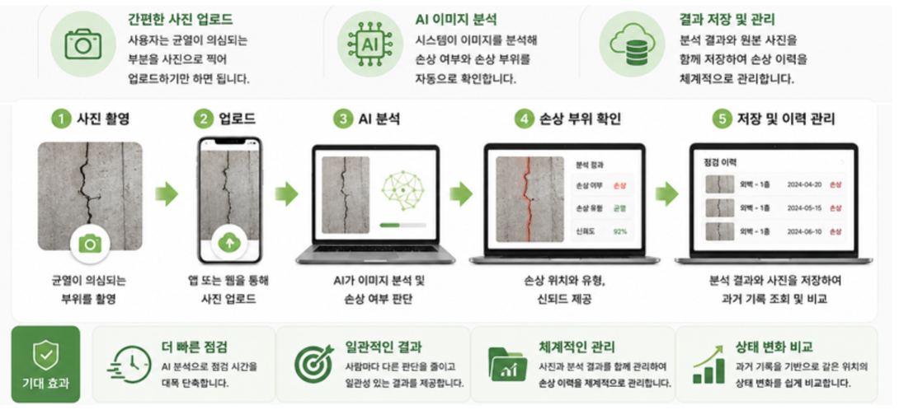
03. 요구사항 분석
기능 및 비기능 요구사항을 분석하여 시스템 설계에 반영하였습니다.
| 구분 | 요구사항 | 주요 내용 | 구현 방향 |
|---|---|---|---|
| 기능 | 이미지 입력 | JPG·PNG 업로드 | 웹/API 업로드 기능 |
| 기능 | 결함 유무 판별 | 정상/결함 이진 분류 | EfficientNetB0 적용 |
| 기능 | 결함 종류 분류 | 10개 클래스 분류 | SegFormer 적용 |
| 비기능 | AI 정확도 | Accuracy 99% 이상 | 성능 검증 수행 |
| 비기능 | 처리 성능 | 5초 이내 추론 | GPU 최적화 |
| 비기능 | 데이터 보안 | 암호화 저장 | 보안 정책 적용 |
04. WBS
프로젝트 일정 및 작업 항목을 WBS 기반으로 관리하였습니다.
| 구분 | 주요 작업 | 담당 | 상태 |
|---|---|---|---|
| 자료수집 | 프로젝트 설정 및 Git 협업 환경 구축 | 유영광 | 완료 |
| 요구사항 분석 | 기능·비기능 요구사항 정의 | 허륜 | 완료 |
| AI 분석 | Classification / Segmentation 모델 개발 | 최세훈 | 완료 |
| AWS 구축 | EKS, ECR, S3 인프라 구축 | 유영광 | 완료 |
| 프론트엔드 | 로그인·업로드·결과 화면 개발 | 허륜 | 완료 |
| 발표 준비 | 발표자료 제작 및 준비 | 최세훈 | 완료 |
05. 역할분담
- AI 모델 개발
- 데이터 전처리 및 학습
- 시스템 아키텍처 설계
- 통합 테스트
- 발표자료 제작 및 준비
- Google OAuth
- 백엔드 개발
- API 개발
- 데이터 저장
- 사진첩 기능
- UI 설계
- 로그인 화면
- 업로드 화면
- 결과 화면 개발
- AWS 구축
- EKS 구성
- ECR 운영
- S3 구축
- WBS 작성
- 기능 테스트
- 품질 검증
06. 시스템 아키텍쳐
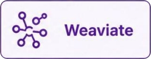
06. 시스템 아키텍쳐 - 클라우드 아키텍쳐
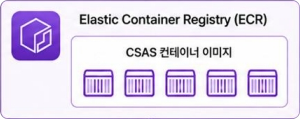
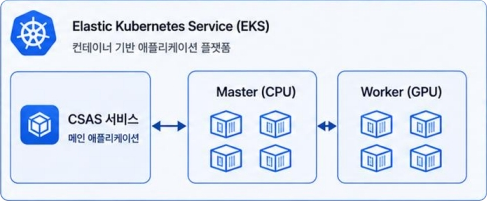
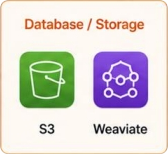
06. 시스템 아키텍쳐 - 데이터 흐름도
사용자 인증
OAuth
처리
07. AI 모델 - Overview
v1.0
1차모듈: EfficientNet-B0 기반
정상/비정상 이진분류 Classification
2차모듈: Segformer 기반
10종 결함 Semantic Segmentation
v1.1
1차모듈: EfficientNet-B0 기반
정상/비정상 이진분류 Classification
2차모듈: Segformer 기반
10종 결함 Semantic Segmentation
v2.0
1차모듈: EfficientNet-B0 기반
정상/결함 11클래스 Classification
2차모듈: Segformer 기반
10종 결함 Semantic Segmentation
v2.1
1차모듈: EfficientNet-B0 기반
정상/결함 11클래스 Classification
2차모듈: Segformer 기반
10종 결함 Semantic Segmentation
07. AI 모델 - Dataset
Dataset Source
균열 탐지 이미지(고도화)
SOC 시설물 균열패턴 데이터
지하에 위치한 SOC 시설물(도로·철도터널, 지하철, 수로터널) 데이터 수집 진행
구축목적
Train Set
Normal : 20,000 / Defect : 399,995
Validation Set
Normal : 2,500 / Defect : 50,000
Total Dataset
11 Classes (Normal + 10 Defects)
07. AI 모델 - Dataset
Class Imbalance (데이터 불균형)
Crack Class가 전체 데이터의 압도적인 비율을 차지하고 있습니다.
→ 소수 클래스 탐지 성능 저하를 막기 위해
Crack 클래스 이미지는 Undersampling하여 학습 수행
| Class | Train | Valid |
|---|---|---|
| Crack(균열) | 321,597 | 40,199 |
| Normal(정상) | 20,000 | 2,500 |
| Leak(누수) | 15,084 | 1,887 |
| Efflorescence(백태) | 14,920 | 1,864 |
| Detachment(들뜸) | 13,010 | 1,625 |
| Reticular Crack(망상균열) | 10,806 | 1,346 |
| Spalling(박리) | 10,329 | 1,296 |
| Material Sep.(재료분리) | 9,219 | 1,159 |
| Rebar(철근노출) | 2,139 | 267 |
| Damage(파손) | 1,934 | 243 |
| Exhilaration(박락) | 957 | 114 |
07. AI 모델 - Dataset
Single Class Label
한 이미지에는 하나의 결함 클래스만 Label 부여
Multiple Defects
한 종류의 결함 클래스가 여러개 동시에 존재 가능
Annotation Type
Polyline / Polygon 형태로 세밀한 객체 데이터 제공
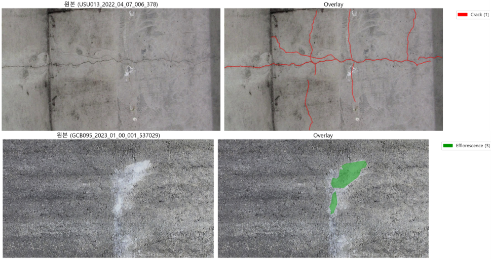
07. AI 모델 - Dataset
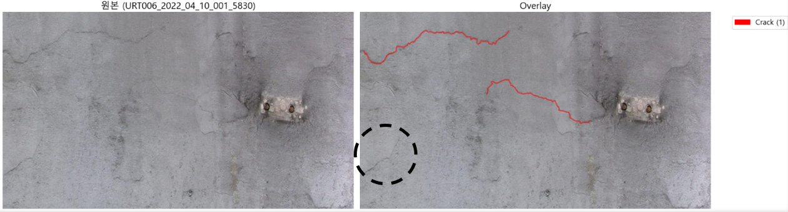
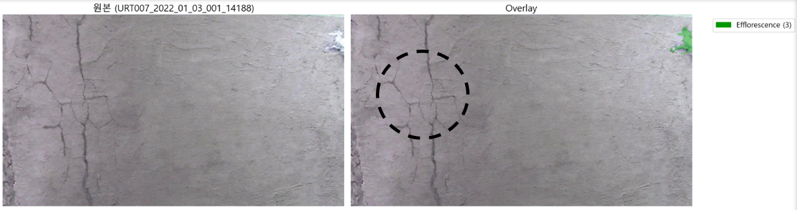
Dataset Label에만 의존하지 않는 탐지 모델 설계
단순 분류를 넘어, 라벨에 없는 미탐지 결함까지 스스로 찾아내는 실무형 AI 아키텍처 구축
07. AI 모델
Backend
Spring Boot
1차 분류기
- 매우 높은 분류 정확도
- 결과 확정 전 확률값 추출
2차 분할기
- 넓은 Receptive Field (Transformer)
- Hint 결합 미탐지 영역 탐색
DB / Client
Result Save
07. AI 모델
EfficientNet-B0
| Class | Precision | Recall | F1-Score |
|---|---|---|---|
| Micro Avg | 0.89 | 0.92 | 0.90 |
| Macro Avg | 0.65 | 0.87 | 0.74 |
| Weighted Avg | 0.92 | 0.92 | 0.91 |
| Normal | 0.96 | 1.00 | 0.98 |
| Crack | 0.99 | 0.91 | 0.95 |
| Leak | 0.87 | 0.95 | 0.91 |
| Efflorescence | 0.68 | 0.94 | 0.79 |
| Detachment | 0.51 | 0.87 | 0.64 |
| Reticular Crack | 0.54 | 0.92 | 0.68 |
| Spalling | 0.45 | 0.84 | 0.59 |
| Material Sep. | 0.77 | 0.90 | 0.83 |
| Rebar | 0.52 | 0.82 | 0.64 |
| Damage | 0.46 | 0.71 | 0.56 |
| Exhilaration | 0.44 | 0.74 | 0.55 |
일정 임계치 이상의 Logit을 정답으로 간주하여 Precision은 낮아졌으나, 결함 누락 방지(Recall 향상)로 2차 모델에 최대한 Hint를 전달
핵심 아이디어: 확정 짓지 않고 'Hint'로 넘기기
- 가장 높은 확률 하나만 정답으로 선택
- 나머지 미세 결함 가능성 완전 소실
2차 모듈의 강력한 사전 힌트로 작용
07. AI 모델
CNN vs Transformer 비교
| 특징 | CNN 기반 | Segformer (Transformer) |
|---|---|---|
| Receptive Field | 국소적 (Local) | 전역적 (Global) |
| 연속성 파악 | 불연속적 | 연속적 (Context 유지) |
| 균열 탐지 | 길게 난 균열 단절 | 연속적인 결함 구조 탐지 |
| 구조 | 고정된 커널 | Self-Attention 메커니즘 |
이미지의 먼 영역까지 픽셀 간 연관성을 계산하여, 긴 균열이나 옹벽 전반의 결함을 끊김 없이 탐지합니다.
1차 모델의 Logit Hint를 입력 레이어와 효율적으로 결합하기 위한 최적의 분할 구조를 가집니다.
모델이 정답 라벨(배경)을 다른 결함 클래스로 예측했을 때 부여되는 Loss 페널티를 의도적으로 낮춰, 라벨링 되지 않은 미세 결함을 유연하게 탐지하도록 유도했습니다.
07. AI 모델
기존 방식
맥락 정보 없이 픽셀 단위 판단
CSAS Model
Classification Hint 기반 Segmentation
[Hint Distribution]
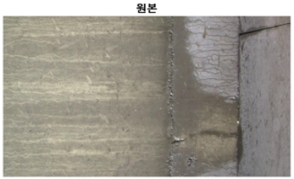
Class Probabilities (Hard)
07. AI 모델
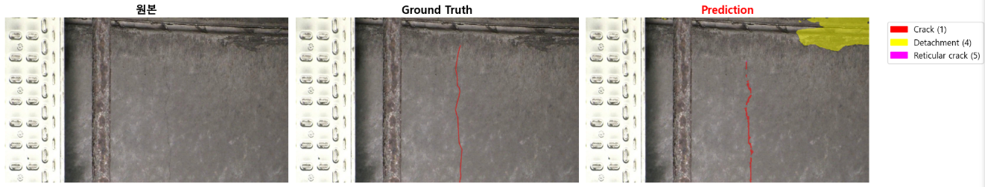
복합 결함 탐지 (Crack & Detachment)
CSAS 모델이 균열과 주변의 박락(Detachment) 현상을 동시에 정확하게 분할해 낸 모습입니다.
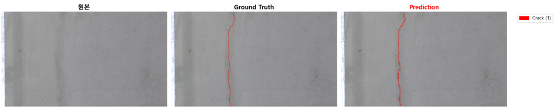
미세 연속 균열 추적
기존 방식에서는 단절되던 긴 미세 균열을 Global Context와 Hint를 통해 끊김 없이 하나로 이어서 탐지했습니다.
08. UI 및 서비스 화면
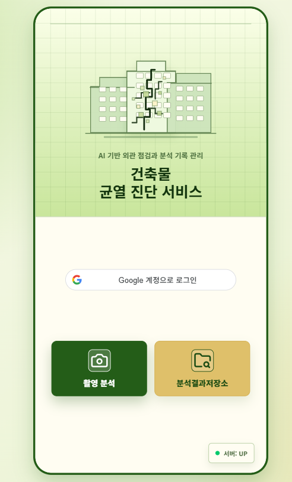
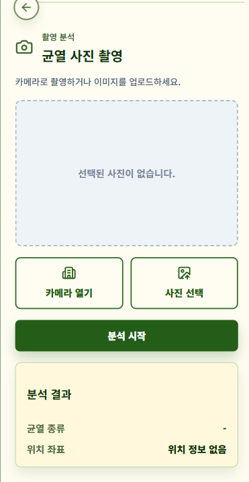

08. UI 및 서비스 화면
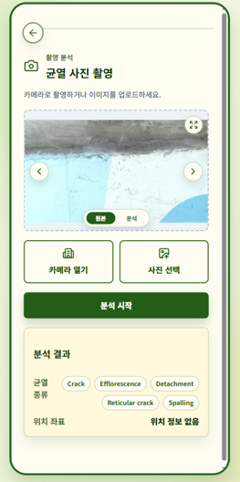
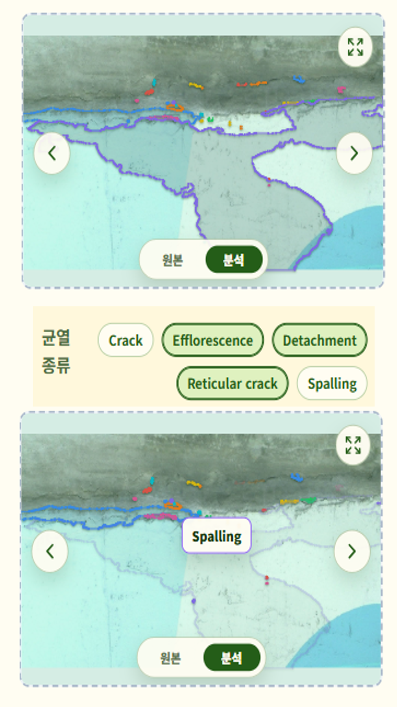
08. UI 및 서비스 화면
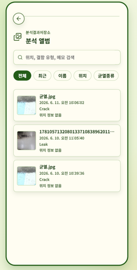
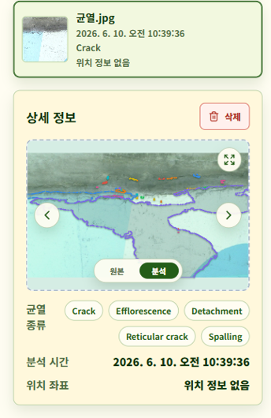
09. 서비스 발전을 위한 개선 사항
이미지 전처리 및 보정 고도화
문제: 현장 작업자가 촬영 시 역광, 짙은 그림자, 흐린 날씨 등으로 인해 원본 사진의 품질이 일정하지 않을 수 있습니다.
개선: AI 분석 서버로 넘기기 전, 이미지의 대비를 맞추고 그림자를 제거하는 조명 보정 및 정규화 알고리즘을 클라이언트 또는 전처리 파이프라인에 추가하여 모델의 균열 탐지 정확도를 극대화합니다.
데이터베이스 이중화 및 무중단 운영
문제: 단일 데이터베이스(SPOF) 운영 시, 예기치 않은 하드웨어 장애나 네트워크 오류 발생 시 서비스 전체가 중단될 위험이 있습니다.
개선: 메인 DB와 스탠바이 DB를 실시간 동기화하는 이중화(Replication) 아키텍처를 구성합니다. 이와 함께 체계적인 백업 및 복구(Backup & Recovery) 전략을 수립하여 재난 상황에서도 데이터 유실 없이 무중단 서비스를 제공합니다.
업로드 아키텍처 개선 (Pre-signed URL)
문제: 클라이언트가 백엔드 서버를 거쳐(form-data) 대용량 이미지를 클라우드 스토리지로 전송하면, 백엔드 서버의 메모리와 대역폭에 심각한 부하가 발생합니다.
개선: 백엔드에서는 업로드 권한이 담긴 URL(Pre-signed URL)만 발급하고, 클라이언트가 스토리지(S3 등)로 이미지를 직접 전송하도록 아키텍처를 변경하여 서버 리소스를 획기적으로 절약하고 전송 속도를 높입니다.
10. Appendix.
본 프로젝트의 상세 내역은 아래 링크를 통해 확인하실 수 있습니다.